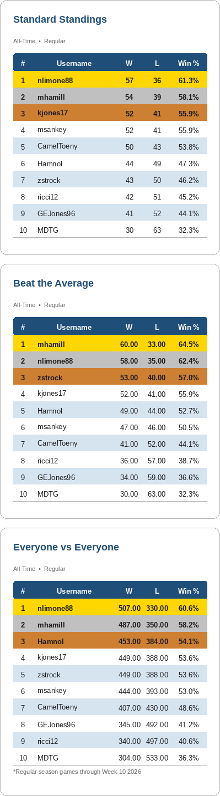
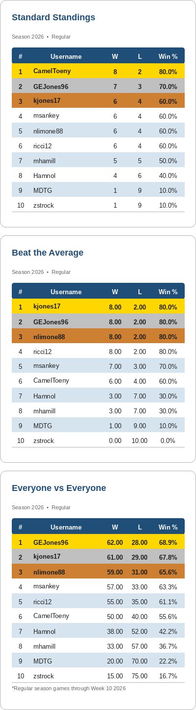
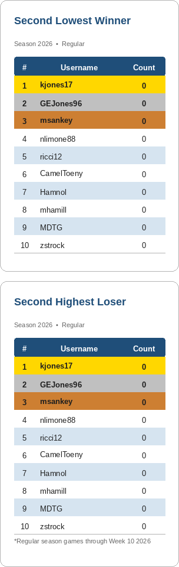
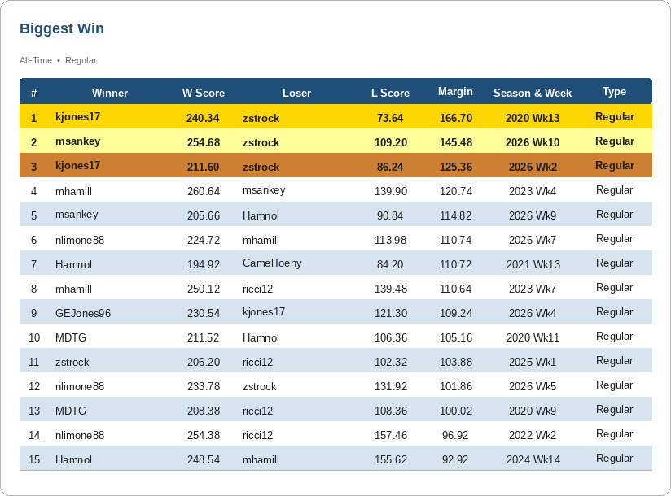
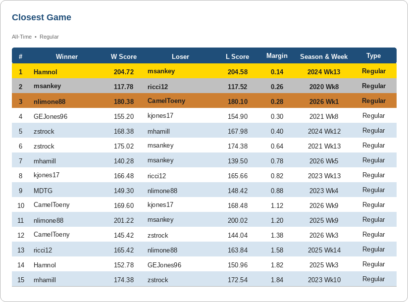
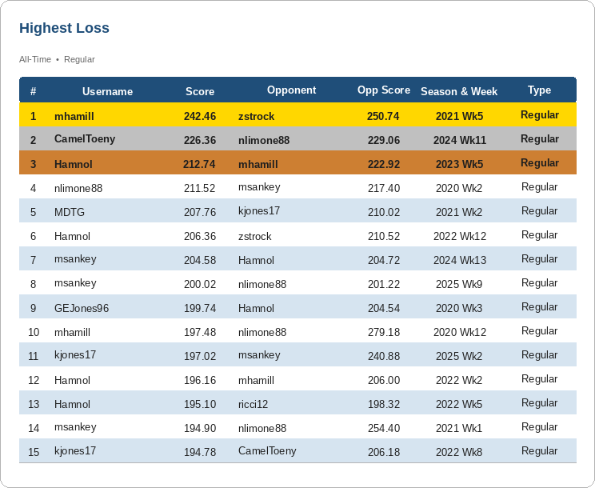
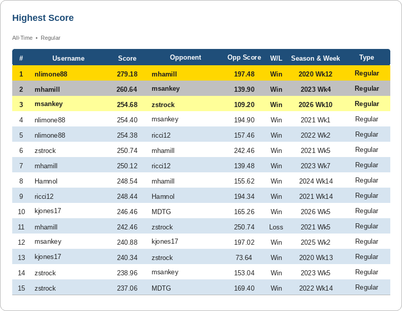
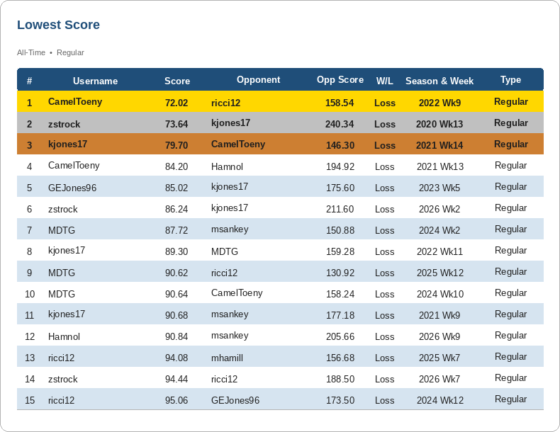
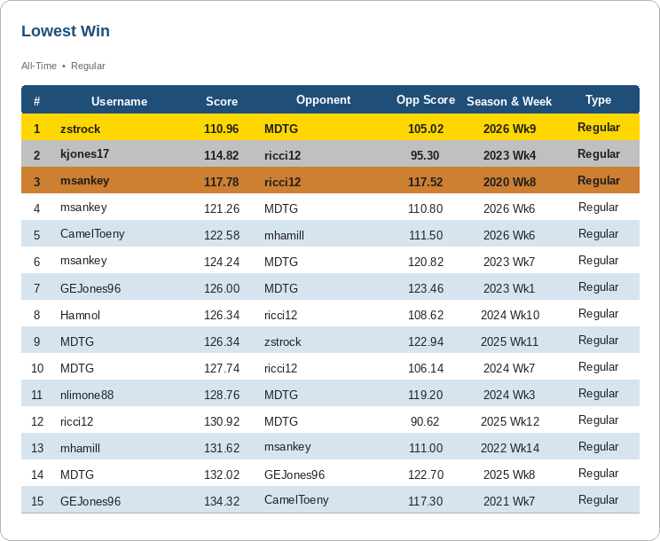

Season 2026 Week 10 (regular) Updated 2026-11-17 17:55 UTC Highest Score msankey - 254.68 (vs zstrock) Lowest Score MDTG - 102.64 (vs GEJones96) Biggest Win msankey by 145.48 (vs zstrock) Closest Game ricci12 by 12.22 (vs kjones17) Highest Loss kjones17 - 194.62 (vs ricci12) Lowest Win Hamnol - 176.62 (vs mhamill)
Download the full Excel workbook








